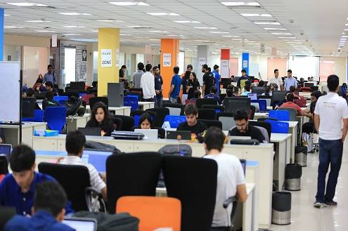

NEWERS TIMES
Who we are?
TO THE NEW is a premium digital technology company that provides end-to-end Product Engineering and Digital Transformation services to Fortune 500 companies and Silicon Valley startups across the globe. We cover the entire gamut of product engineering including user experience design, web & mobile application development, cloud, devOps, big data, testing and infrastructure managed services to transform businesses digitally. At TO THE NEW, design led engineering is at the core of our offerings.
What do we stand for
We cover the entire gamut of product engineering including user experience design, web & mobile application development, cloud, devOps, big data, testing and infrastructure managed services to transform businesses digitally. At TO THE NEW, design led engineering is at the core of our offerings. Some of the cutting-edge technologies, frameworks and platforms we work on include MEAN, Grails, IoT, Blockchain, Bootstrap, AEM, Drupal, Hadoop, AWS, React, Ionic, Roku, iOS, and Android.
TO THE NEW Organized TechFluence, 2018: Highlights
TechFluence, 2018 is a community-driven technology conference organized by TO THE NEW on 24th March 2018 in Crowne Plaza, New Delhi.We have been organizing GrailsConf, an independent series of global conferences with a complete focus on Groovy, Grails, Gradle and the related technologies from last 5 years. This year we decided to make it technology agnostic by including areas such as Cloud, DevOps, Docker, Blockchain, AI, ML, Microservices, Data Engineering & Spring. The main aim behind organizing this conference was to provide a
|  | |
Who we are?
TO THE NEW is a premium digital technology company that provides end-to-end Product Engineering and Digital Transformation services to Fortune 500 companies and Silicon Valley startups across the globe. We cover the entire gamut of product engineering including user experience design, web & mobile application development, cloud, devOps, big data, testing and infrastructure managed services to transform businesses digitally. At TO THE NEW, design led engineering is at the core of our offerings.
What do we stand for
We cover the entire gamut of product engineering including user experience design, web & mobile application development, cloud, devOps, big data, testing and infrastructure managed services to transform businesses digitally. At TO THE NEW, design led engineering is at the core of our offerings. Some of the cutting-edge technologies, frameworks and platforms we work on include MEAN, Grails, IoT, Blockchain, Bootstrap, AEM, Drupal, Hadoop, AWS, React, Ionic, Roku, iOS, and Android.
4 Blogs you should read
Deploy code using AWS CodeDeploy and GitHub
by Ranvijay jamwalHe much talked about AWS CodeDeploy is being used as a daily deployment ..
Read MoreAdaptive Video Streaming and HLS file structure
by shivam khandelwalWhether you are a lazy programmer dreaming to chieve more by doing less or super serious...
Read moreDeploy code using AWS CodeDeploy and GitHub
by Ranvijay jamwalHe much talked about AWS CodeDeploy is being used as a daily deployment ..
Read MoreAdaptive Video Streaming and HLS file structure
by shivam khandelwalWhether you are a lazy programmer dreaming to chieve more by doing less or super serious...
Read more